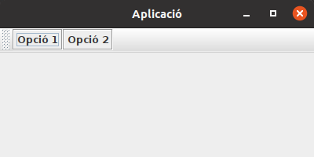

Les aplicacions d'escriptori acostumen a tenir una (o més) barres d'eines.
Per afegir aquests components, s'utilitza la classe JToolBar.
Les barres d'eines s'afegeixen igual que qualsevol component: afegint-les dins d'un altre component.
Normalment s'afegeixen a la secció superior del panell principal, si està organitzat com un BorderLayout.
Però abans, cal crear la barra i afegir-hi els botons.
Per defecte, les barres d'eines es poden moure a qualsevol costat de la finestra, però també es poden deixar flotant o fixar-les a la posició inicial amb el mètode setFloatable(true/false).
Per gestionar els esdeveniments sobre el botons de la barra, es farà igual que sobre qualsevol botó o menú.
Per afegir un separador entre elements s'utilitza el mètode addSeparator().
Si es vol deixar més espai, es pot cridar el mateix mètode indicant la separació com a paràmetre.
private static void crearToolBar() {
// Crear la barra d'eines
JToolBar toolBar = new JToolBar();
// Afegir botons a la barra d'eines
toolBar.add(crearBoto("Opció 1", "Primera opció", "op1"));
toolBar.add(crearBoto("Opció 2", "Segona opció", "op2"));
// Afegir la barra d'eines a la part superior del panell principal de la finestra
f.getContentPane().add(toolBar, BorderLayout.PAGE_START);
}
private static JButton crearBoto(String text, String toolTip, String action) {
JButton b = new JButton(text);
b.setToolTipText(toolTip);
// TODO: configurar acció i afegir controlador
// b.setActionCommand(action);
// b.addActionListener(optionControl);
return b;
}
